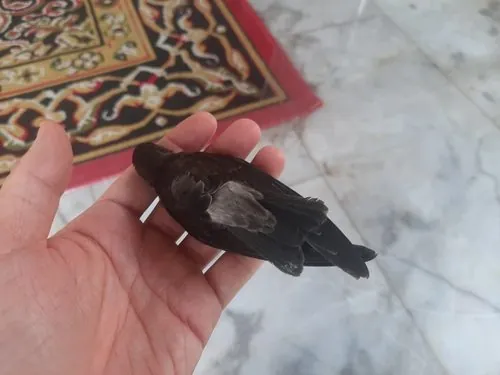

鸟类 · 动物界
金丝燕 Aerodramus fuciphagus

用唾液筑巢的小型雨燕，其燕窝是著名的滋补品，常在洞穴中集群生活，靠回声定位在黑暗的洞穴中飞行。
- 分类
- 门脊索动物门纲鸟纲目雨燕目科雨燕科属金丝燕属
- 栖息环境
- 热带沿海岩洞、石灰岩洞穴和人工燕屋，靠回声定位在洞中飞行
- 地理分布
- 东南亚的泰国、越南、马来西亚、印度尼西亚及中国海南、云南南部
- 保护级别
- IUCN 无危（LC）；中国境内种群稀少，未列入国家重点保护名录
物种志
金丝燕体长 11–13 cm，体重约 12–20 g，是体形很小的雨燕。它的全身羽毛以深褐色至黑褐色为主，腰部颜色较浅，翅膀细长而尖，适合长时间飞行；喙短而宽，脚细小，几乎不能站立，多攀附在岩壁上。雌雄羽色相似。
金丝燕分布于东南亚的泰国、越南、马来西亚、印度尼西亚和中国海南、云南南部等地，栖息在沿海岩洞、石灰岩洞穴和人工燕屋中。它们以空中的昆虫为食，靠回声定位在漆黑的洞穴中飞行，是少数能用“咔嗒”声定位的鸟类之一。金丝燕用唾液将羽毛和苔藓黏成杯状巢，固定在高处岩壁上，这种巢就是人们食用的“燕窝”。繁殖期每窝产 1–2 枚卵，孵化约 22–28 天。由于过度采集燕窝，部分野生种群受到威胁，目前被列为无危物种。
形态与习性
- 食性空中飞捕蚊、蝇等小型昆虫
- 体长11–13 cm
- 体重约 12–20 g
- 繁殖每窝 1–2 枚卵，孵化约 22–28 天
- 寿命野外约 10 年
- 回声定位在漆黑洞穴中靠“咔嗒”声定位飞行
- 燕窝用唾液黏合羽毛、苔藓筑成杯状巢
趣味知识
- 金丝燕用唾液黏成的杯状巢就是著名的“燕窝”。
- 它能在漆黑的洞穴中靠回声定位飞行，是少数会“声呐”的鸟类。
- 金丝燕的脚细小，几乎不能站立，多攀附在岩壁上。
- 因燕窝价值高，野生金丝燕的巢常被过度采集。